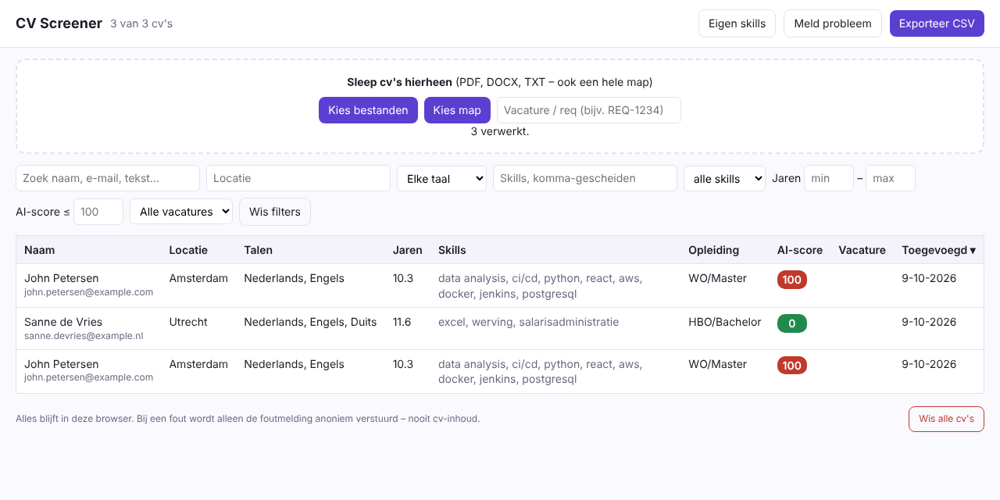

CV Screener
Lees, filter en controleer honderden cv's tegelijk, naast je eigen ATS. Alles blijft in je browser.
Download cv-screener.zipChrome of Edge · versie 0.1 (testversie)

Installeren (2 minuten)
- Download de zip hierboven en pak hem uit: rechtsklik → Alles uitpakken.
- Ga in Chrome naar
chrome://extensions(Edge:edge://extensions). - Zet rechtsboven Ontwikkelaarsmodus aan.
- Klik op Uitgepakte extensie laden en kies de uitgepakte map, dus de map met
manifest.jsonerin. - Klik op het puzzelstukje naast de adresbalk en zet de punaise aan bij CV Screener.
Gebruiken
- Cv's toevoegen: klik op het icoon, kies Open screener en sleep er PDF-, DOCX- of TXT-bestanden of een hele map in. Vul eerst het vacature-/req-nummer in als je er later op wilt filteren.
- Vanuit je ATS (bijv. Oleeo): open een kandidaat, klik op het icoon en kies Pak kandidaat van deze pagina. De bijlagen worden opgehaald met jouw eigen login.
- Filteren: op naam, locatie, taal, skills, jaren ervaring, AI-score en vacature. Klik op een kolomkop om te sorteren en op een kandidaat voor de details.
- Exporteer CSV downloadt de gefilterde lijst, klaar voor Excel.
- Eigen skills zijn vaardigheden die je zelf toevoegt aan de herkenning.
De AI-score
De score loopt van 0 tot 100: groen is weinig signalen, oranje een aantal, rood veel. Open een kandidaat om te zien waarom. Signalen zijn bijvoorbeeld typische AI-woorden, vergeten sjabloontekst zoals “[Bedrijfsnaam]”, heel gelijkmatige zinnen, de maker van de PDF en exact dezelfde tekst als bij een andere sollicitant. Het is een indicatie, geen bewijs. Gebruik de score om te prioriteren, niet om af te wijzen.
Privacy en meldingen
Cv's en kandidaatgegevens worden nergens naartoe gestuurd. Gaat er iets mis, dan wordt alleen de foutmelding anoniem naar de ontwikkelaar gestuurd, zonder namen, bestandsnamen of cv-tekst. Zelf iets kwijt? Gebruik de knop Meld probleem in de screener.
Bijwerken of verwijderen
Pak een nieuwe zip uit over de oude map en klik op ↻ bij CV Screener in chrome://extensions. Je cv's blijven dan bewaard. Klik je daar op Verwijderen, dan wis je ook alle opgeslagen cv's.